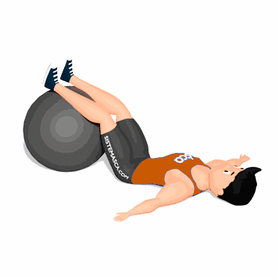

Elevação de Quadril com Bola Suíça

Esse exercício fortalece a região glútea, o assoalho pélvico e promove estabilidade na articulação do quadril.
Ficha Técnica
Tipo: Musculação
Grupo Muscular: Glúteo
Aparelho: Nenhum
Músculos: Nenhum
Como realizar
- Deite-se de costas, posicionando um calcanhar em cima de uma bola suíça e com os joelhos flexionados;
- Pressione os calcanhares na bola suíça, eleve os quadris para cima e termine o movimento contraindo os glúteos. Tome cuidado para não forçar a região lombar;
- Retorne à posição inicial.
 RC STORE
RC STORE